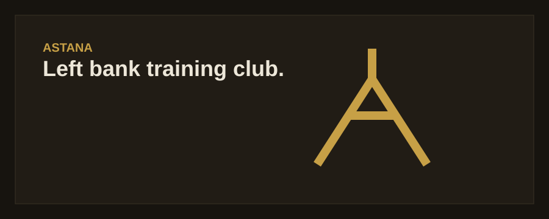
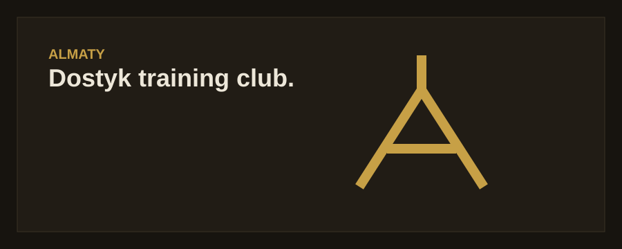

Astana
Left Bank · 08 Saryarka Avenue
06:00–00:00 daily
Three fictional Gold Gym locations designed for this student project.

Left Bank · 08 Saryarka Avenue
06:00–00:00 daily

Dostyk area · 15 Abai Avenue
06:00–00:00 daily

City Center · 21 Tauke Khan Avenue
06:00–00:00 daily